Expanded Online ADMM Benchmarks
Includes oracle fixed-rho grid, raw/normalized/relative residual balancing, BB-style online penalty adaptation, OGD variants, freeze ablation, and no-dual-rescale failure-mode ablation.
Benchmark Iterations By Problem
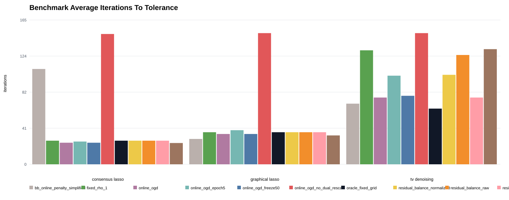
Benchmark Wall Time By Problem
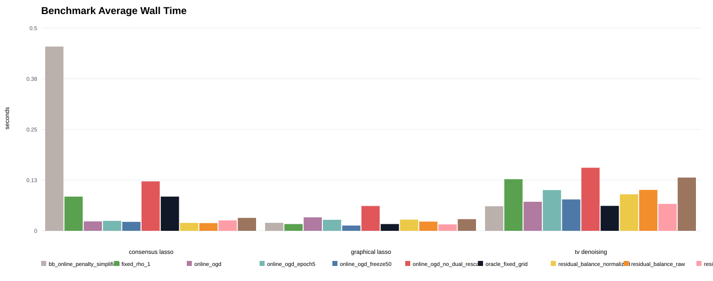
Benchmark Final Primal By Problem
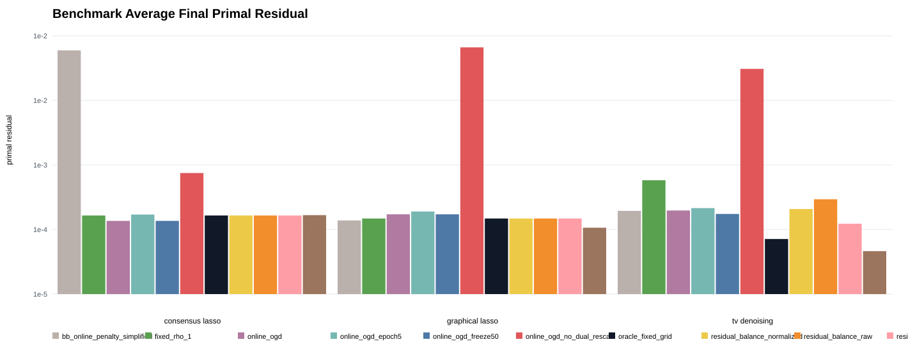
Benchmark Final Dual By Problem
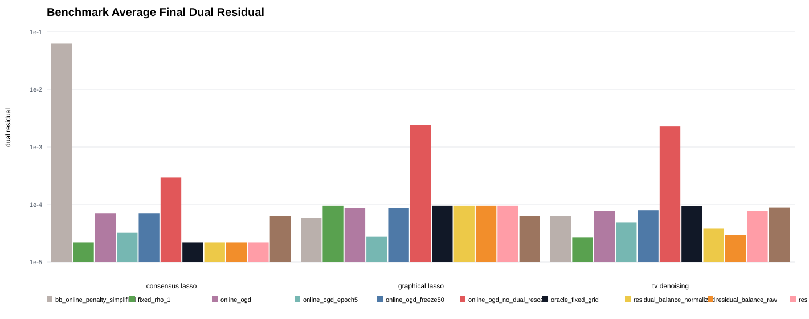
Benchmark Rho Changes By Problem
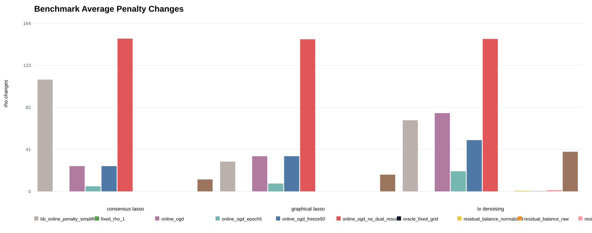
Sensitivity Consensus Lasso Iterations
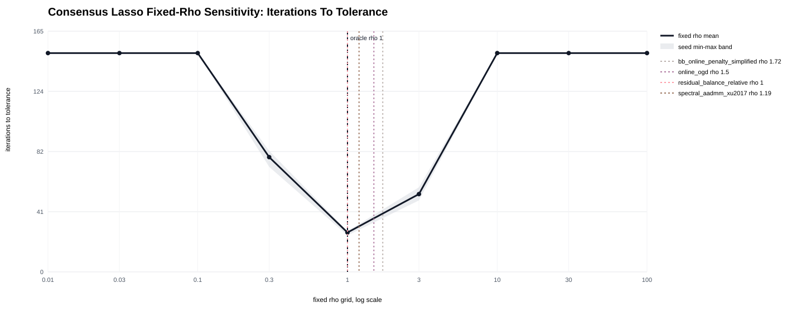
Sensitivity Consensus Lasso Residual
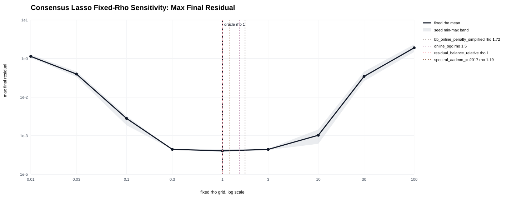
Sensitivity Graphical Lasso Iterations
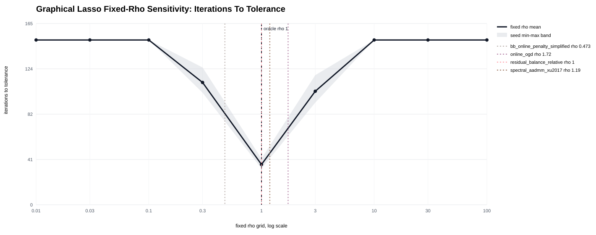
Sensitivity Graphical Lasso Residual
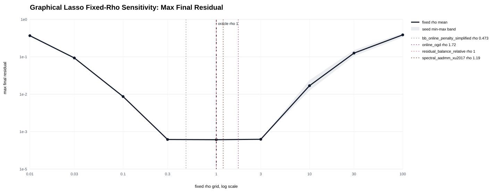
Sensitivity Tv Denoising Iterations
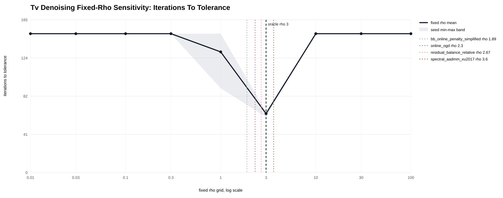
Sensitivity Tv Denoising Residual
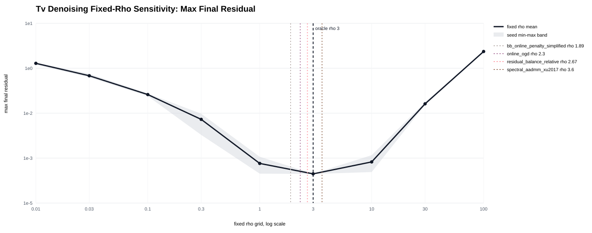
Benchmark Consensus Lasso Objective Seed0
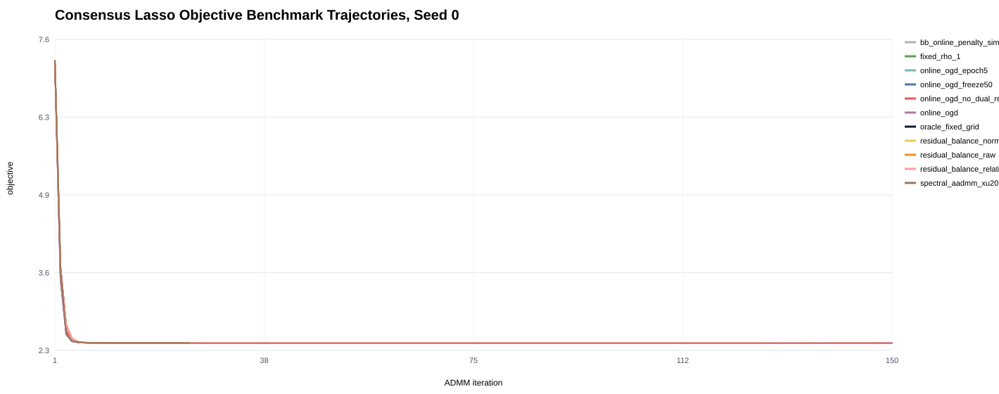
Benchmark Consensus Lasso Primal Norm Seed0
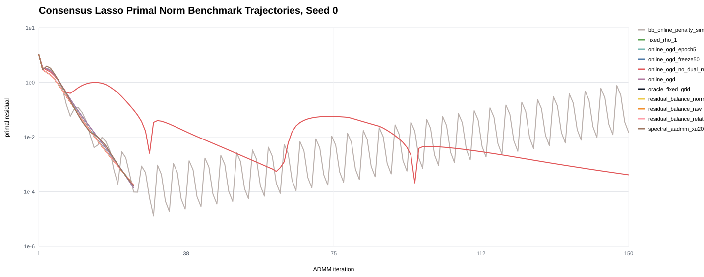
Benchmark Consensus Lasso Dual Norm Seed0
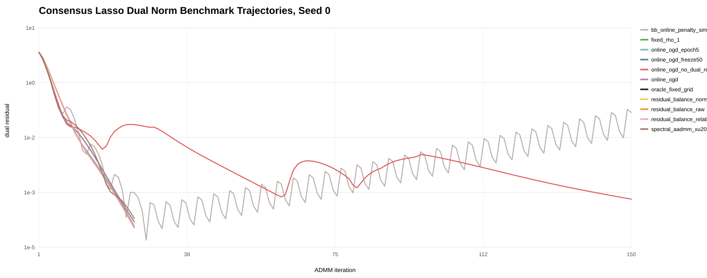
Benchmark Consensus Lasso Rho Seed0
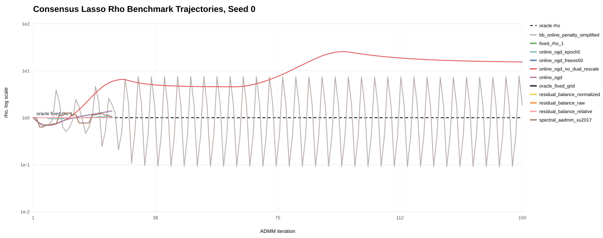
Benchmark Graphical Lasso Objective Seed0
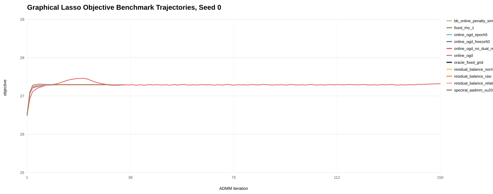
Benchmark Graphical Lasso Primal Norm Seed0
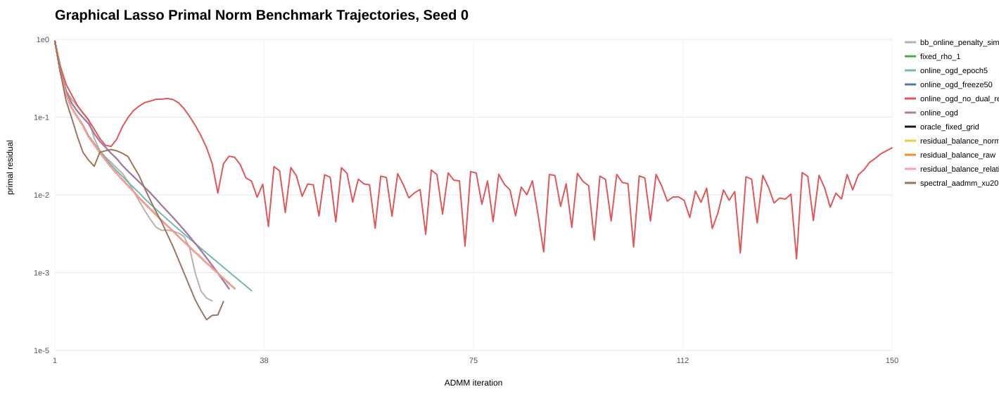
Benchmark Graphical Lasso Dual Norm Seed0
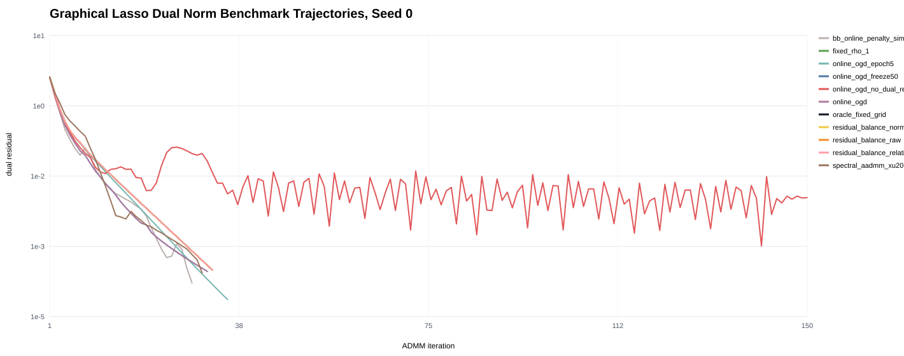
Benchmark Graphical Lasso Rho Seed0
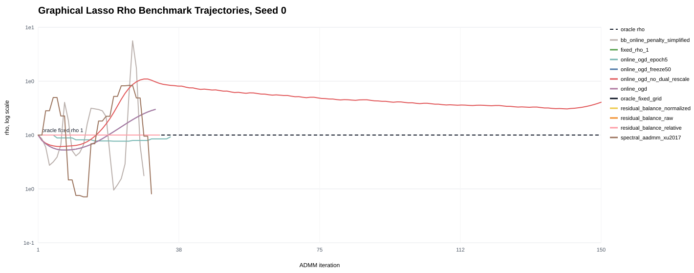
Benchmark Tv Denoising Objective Seed0
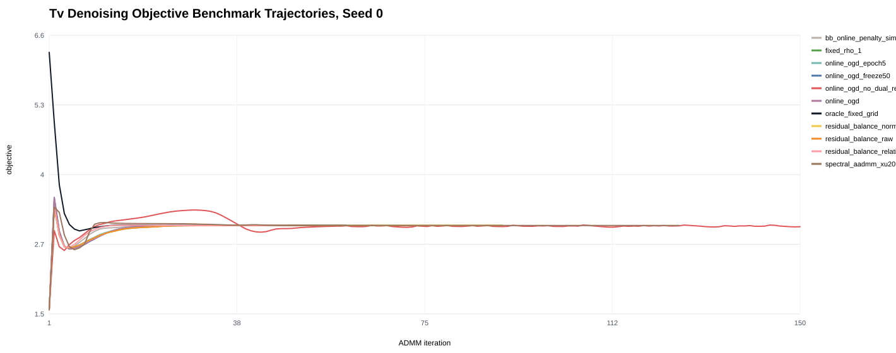
Benchmark Tv Denoising Primal Norm Seed0
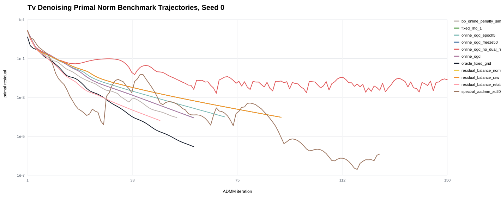
Benchmark Tv Denoising Dual Norm Seed0
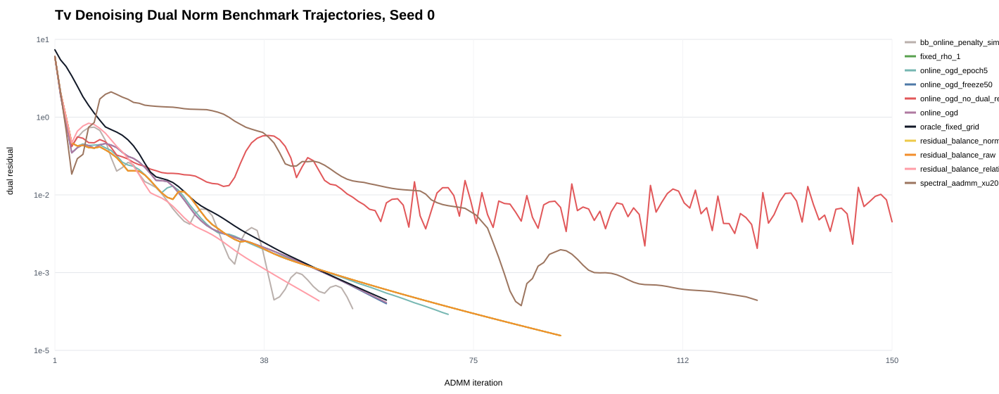
Benchmark Tv Denoising Rho Seed0
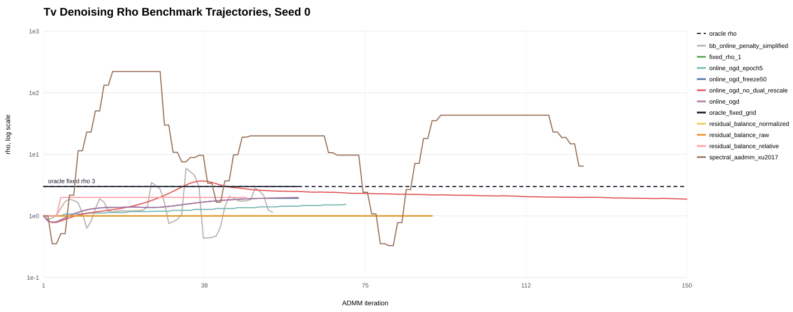
Grouped Metrics
| problem | method | iterations | final_primal | final_dual | final_rho | rho_changes | wall_time_sec |
|---|---|---|---|---|---|---|---|
| consensus_lasso | bb_online_penalty_simplified | 109.00 | 0.00677 | 0.06 | 1.72 | 109.00 | 0.46 |
| consensus_lasso | fixed_rho_1 | 27.00 | 8.18e-05 | 2.2e-05 | 1.00 | 0 | 0.09 |
| consensus_lasso | online_ogd | 24.67 | 7.08e-05 | 7.06e-05 | 1.50 | 24.67 | 0.02 |
| consensus_lasso | online_ogd_epoch5 | 26.00 | 8.39e-05 | 3.22e-05 | 1.15 | 5.00 | 0.02 |
| consensus_lasso | online_ogd_freeze50 | 24.67 | 7.08e-05 | 7.06e-05 | 1.50 | 24.67 | 0.02 |
| consensus_lasso | online_ogd_no_dual_rescale | 149.00 | 0.000255 | 0.000296 | 20.60 | 149.00 | 0.12 |
| consensus_lasso | oracle_fixed_grid | 27.00 | 8.18e-05 | 2.2e-05 | 1.00 | 0 | 0.09 |
| consensus_lasso | residual_balance_normalized | 27.00 | 8.18e-05 | 2.2e-05 | 1.00 | 0 | 0.02 |
| consensus_lasso | residual_balance_raw | 27.00 | 8.18e-05 | 2.2e-05 | 1.00 | 0 | 0.02 |
| consensus_lasso | residual_balance_relative | 27.00 | 8.18e-05 | 2.2e-05 | 1.00 | 0 | 0.03 |
| consensus_lasso | spectral_aadmm_xu2017 | 24.33 | 8.26e-05 | 6.29e-05 | 1.19 | 11.67 | 0.03 |
| graphical_lasso | bb_online_penalty_simplified | 29.00 | 7.16e-05 | 5.86e-05 | 0.47 | 29.00 | 0.02 |
| graphical_lasso | fixed_rho_1 | 36.67 | 7.55e-05 | 9.58e-05 | 1.00 | 0 | 0.02 |
| graphical_lasso | online_ogd | 34.67 | 8.44e-05 | 8.64e-05 | 1.72 | 34.33 | 0.03 |
| graphical_lasso | online_ogd_epoch5 | 39.00 | 9.1e-05 | 2.75e-05 | 0.92 | 7.67 | 0.03 |
| graphical_lasso | online_ogd_freeze50 | 34.67 | 8.44e-05 | 8.64e-05 | 1.72 | 34.33 | 0.01 |
| graphical_lasso | online_ogd_no_dual_rescale | 150.00 | 0.00734 | 0.00242 | 3.84 | 148.33 | 0.06 |
| graphical_lasso | oracle_fixed_grid | 36.67 | 7.55e-05 | 9.58e-05 | 1.00 | 0 | 0.02 |
| graphical_lasso | residual_balance_normalized | 36.67 | 7.55e-05 | 9.58e-05 | 1.00 | 0 | 0.03 |
| graphical_lasso | residual_balance_raw | 36.67 | 7.55e-05 | 9.58e-05 | 1.00 | 0 | 0.02 |
| graphical_lasso | residual_balance_relative | 36.67 | 7.55e-05 | 9.58e-05 | 1.00 | 0 | 0.02 |
| graphical_lasso | spectral_aadmm_xu2017 | 33.00 | 5.9e-05 | 6.25e-05 | 1.19 | 16.33 | 0.03 |
| tv_denoising | bb_online_penalty_simplified | 69.33 | 9.26e-05 | 6.26e-05 | 1.89 | 69.33 | 0.06 |
| tv_denoising | fixed_rho_1 | 130.33 | 0.00021 | 2.7e-05 | 1.00 | 0 | 0.13 |
| tv_denoising | online_ogd | 76.33 | 9.35e-05 | 7.64e-05 | 2.30 | 76.33 | 0.07 |
| tv_denoising | online_ogd_epoch5 | 101.33 | 9.96e-05 | 4.89e-05 | 1.86 | 19.67 | 0.10 |
| tv_denoising | online_ogd_freeze50 | 78.33 | 8.53e-05 | 7.93e-05 | 2.37 | 50.00 | 0.08 |
| tv_denoising | online_ogd_no_dual_rescale | 150.00 | 0.00413 | 0.00226 | 1.86 | 148.67 | 0.16 |
| tv_denoising | oracle_fixed_grid | 63.67 | 4.36e-05 | 9.43e-05 | 3.00 | 0 | 0.06 |
| tv_denoising | residual_balance_normalized | 102.33 | 9.73e-05 | 3.8e-05 | 1.67 | 0.67 | 0.09 |
| tv_denoising | residual_balance_raw | 125.00 | 0.000126 | 2.95e-05 | 1.33 | 0.33 | 0.10 |
| tv_denoising | residual_balance_relative | 76.33 | 6.57e-05 | 7.65e-05 | 2.67 | 1.33 | 0.07 |
| tv_denoising | spectral_aadmm_xu2017 | 131.67 | 3.15e-05 | 8.8e-05 | 3.60 | 38.67 | 0.13 |